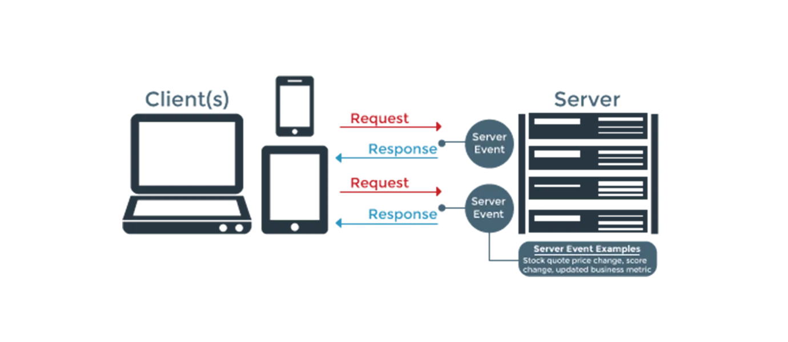
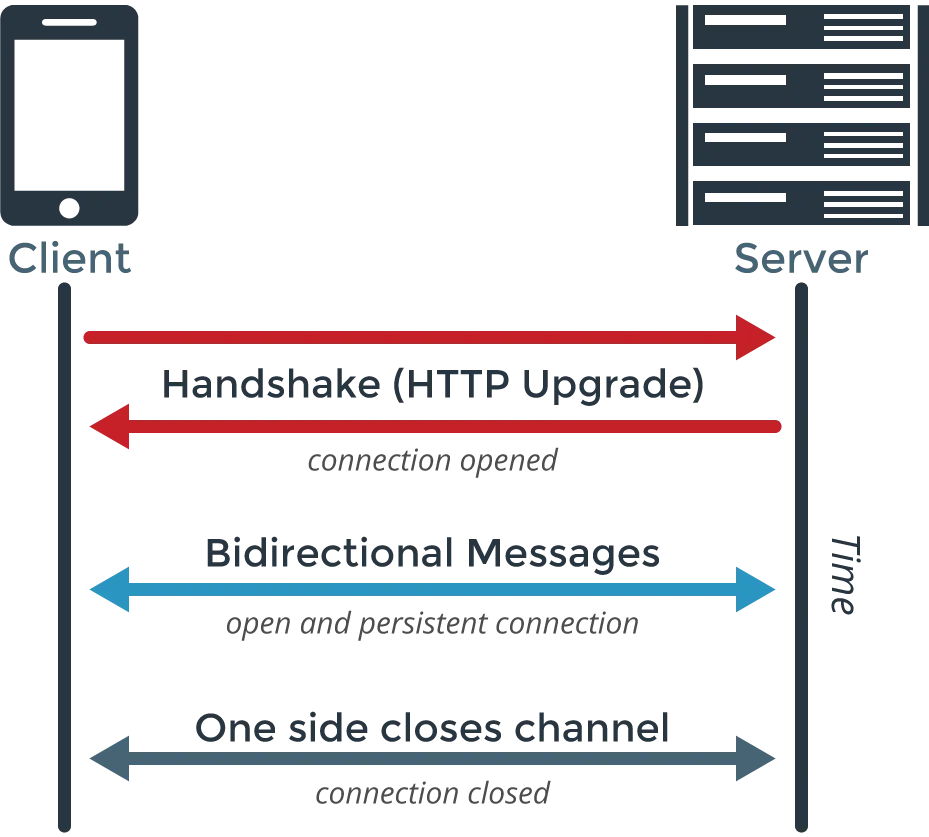
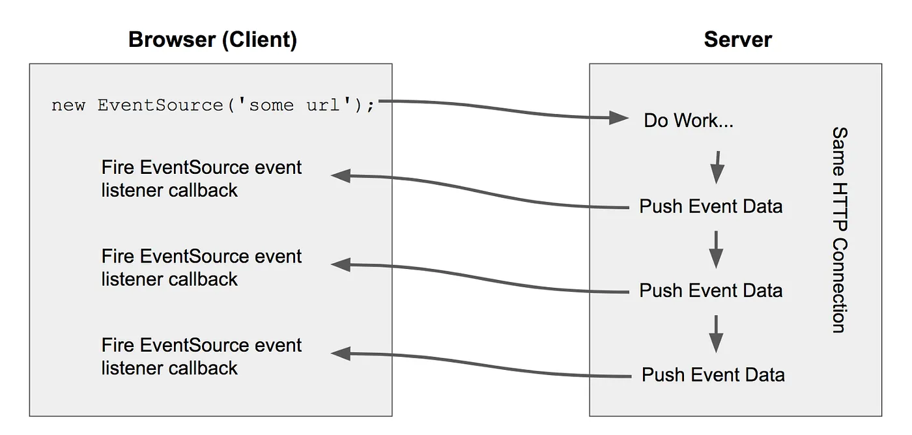

Long Polling vs WebSockets vs Server-Sent Events
Web applications were originally designed as a simple client-server model where the web client initiates an HTTP request requesting some data from the server. For example, a basic web application with the client-server model flow will be as follows.
-
A client makes an HTTP request requesting a web page from a server.
-
The server calculates the response
-
The server sends the response to the client
As developers began to explore ways to implement more “real-time” applications. The HTTP protocol made these sort of use cases very challenging, as a result, creative ways to manipulate HTTP request-response model into a more real-time model began to emerge.
Ajax Polling: Link to heading
In Ajax polling, a client makes XHR(XMLHttpRequest)/Ajax requests to server repeatedly at some regular interval to check for new data.
A flow for Ajax polling will as follow.
- A client initiates requests at a small regular intervals (e.g 0.5 Seconds)
- The server prepares the response and sends it back to to the client just like normal HTTP requests.
Making repeated requests to server wastes resources as each new incoming connection must be established, the HTTP headers must be passed, a query for new data must be performed, and a response (usually with no new data to offer) must be generated and delivered. The connection must be closed and any resources cleaned up.
Long Polling: Link to heading
As in regular polling, rather than having to repeat this process multiple times for every client until new data for a given client becomes available, Long polling is technique where the server elects to hold a client connection open for as long as possible, delivering a response only after data becomes available or timeout threshold has been reached. After receiving response client immediately sends the next request.
On the client side, only a single request to the server needs to be managed. When the response is received, the client can initiate a new request, repeating this process as many times as necessary.

A flow for Long polling will look as follows
-
A client initiates an XHR/AJAX request, requesting some data from a server.
-
The server does not immediately respond with request information but waits until there is new information available.
-
When there is new information available, the server responds with new information.
-
The client receives the new information and immediately sends another request to the server restarting the process.
Some challenges in long polling Link to heading
- Message ordering and delivery guarantees.
Message ordering cannot be guaranteed if the same client opens multiple connections to the server. If the client was not able to receive the message then there will be possible message loss.
-
Performance and scaling
-
Device support and fallbacks
WebSockets: Link to heading
WebSocket is a computer communication protocol which provides full-duplex communication channels over a single TCP connection.
-
It is different from HTTP but compatible with HTTP.
-
Located at layer 7 in the OSI model and depends on TCP at layer 4.
-
Works over port 80 and 443 ( in case of TLS encrypted) and supports HTTP proxies and intermediaries.
-
To achieve compatibility, the WebSocket handshake uses Upgrade header to update the protocol to the WebSocket protocol.
The WebSocket protocol enables interaction between a client and a web server with lesser overheads, providing real-time data transfer from and to the server. WebSockets keeps the connection open, allowing messages to be passed back and forth between the client and the server. In this way, a two-way ongoing conversation can take place between the client and the server.

A WebSocket connection flow will look something like this.
-
A client initiates a WebSocket handshake process by sending a request which also contains
Upgradeheader to switch to WebSocket protocol along with other information. -
The server receives WebSocket handshake request and process it.
2(a). If the server can establish the connection and agrees with client terms then sends a response to the client, acknowledging the WebSocket handshake request with other information.
2(b). If the server can not establish the connection then it sends response acknowledging it cannot establish WebSocket connection.
-
Once the client receives a successful WebSocket connection handshake request, WebSocket connection will be opened. Now, client and servers can start sending data in both directions allowing real-time communication.
-
The connection will be closed once the server or the client decides to close the connection.
Server Sent Events: Link to heading
Unlike WebSockets, Server-Sent Events are a one-way communication channel where events flow from server to client only. Server-Sent Events allows browser clients to receive a stream of events from a server over an HTTP connection without polling.
A client subscribes to a “stream” from a server and the server will send messages (“event-stream”) to the client until the server or the client closes the stream. It is up to the server to decide when and what to send the client, for instance as soon as data changes.

A flow for server send events will be as follows.
-
Browser client creates a connection using an EventSource API with a server endpoint which is expected to return a stream of events over time. This essentially makes an HTTP request at given URL.
-
The server receives a regular HTTP request from the client and opens the connection and keeps it open. The server can now send the event data as long as it wants or it can close the connection if there are no data.
-
The client receives each event from the server and process it. If it receives a close signal from the server it can close the connection. The client can also initiate the connection close request.
As SSE is based on HTTP, it is more compliant with existing IT infrastructure like (Load Balancer, Firewall, etc), unlike WebSockets which can be blocked by some firewall. Server-Sent events are not supported by all browsers.